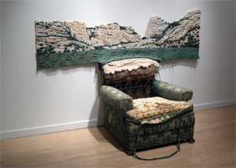

Afterlife Exhibition: November 7, 2009 - January 23, 2010 |
 |
On the heels of its recent show, NextNew:Green that featured the works of emerging Bay Area artists exploring issues related to conservation, the environment and global warming, the San Jose Institute of Contemporary Art (ICA) presents Afterlife, a group exhibition of works created to breathe new life into re-purposed materials and objects. Guest curated by Kathryn Funk, Afterlife will be exhibited in the ICA's Main Gallery and Cardinale Project Room from November 7, 2009 through January 23, 2010. The show includes sculpture, video, and multi-media work from artist Claudia Borgna, Mark Fox-Morgan, Elisabeth Higgins O'Connor, Lisa Kokin, Charlotte Kruk, Robert Larson, Scott Oliver, Beverly Rayner, and Ann Weber.
A public reception will be held at the ICA on Friday, November 6, 2009 from 6pm to 8pm. An Artist Talk moderated by Kathryn Funk will take place at the ICA on Thursday, November 12th from 7pm to 9pm.
The artists represented in Afterlife take advantage of cast-offs from our contemporary lives. With a conscious eye to the materiality of the chosen discards, items from the street, junkyards and second-hand stores are transformed into fresh, inspired creations that give rise to thoughtful consideration and interpretation.
Even before the green recycling revolution took hold, artists were reusing and re-purposing found materials,” says Afterlife curator Kathryn Funk. “When an object has been discharged from its original purpose it still carries some association with its past. When that association is altered it takes on new meaning,” explains Funk.
Exploring new meanings and new lives of discarded and re-used materials is the central focus of the artists’ works on view in Afterlife.
London-based artist Claudia Borgna has been collecting and using plastic bags as an inspired muse in her art for several years, carefully gathering and using them after each installation or performance in a different configuration. Borgna’s work will be on view in Afterlife and Night Moves – after dark video art programming presented in the ICA’s front windows.
Mark Fox-Morgan uses paper – a tree by-product— cast as beams for his massive house-like structure. The beguiling skeleton appears remarkably strong despite its extremely fragile nature, thus calling into question the nature and exploitation of its source. Elisabeth Higgins O’Connor and Lisa Kokin find inspiration in materials scavenged from flea markets and thrift stores. Higgins O’Connor uses discarded fabrics of all sorts and stitches together life-sized anthropomorphic stuffed animal creatures. Kokin uses books and the book format; dissecting, reassembling and pulping them to express new ideas and her own personal, political and cultural views. Charlotte Kruk salvages and sews product wrappers side by side to create new textiles in the form of wearable art. Robert Larson gathers and dissects tossed cigarette packages and match books to make visually stunning constructed paintings of rich color patterns, hues and textures, with the dissected paper material.
Conceptual artist Scott Oliver alters everyday objects, carefully crafting them into a unique state that undermines their original function but never erases the original object’s identity. Beverly Rayner manipulates all kinds of discarded items and constructs new roles for them in her art as she explores how memory distorts the truth. Ann Weber transforms cardboard boxes pulled from dumpsters into elegant, playful biomorphic forms.
Also opening on November 7th in the ICA’s Focus Gallery and running through February 20, 2010 is Manifold,
a solo exhibition of two installations of works by San Francisco-based postminimalist artist
Theodora Varnay Jones. The installations are comprised
of drawings, constructed works, sculptures, and re-conceptualized ready-made pieces that represent the artist’s exploration and interpretation of form, space and repetition. A Talking Art conversation with Varnay Jones will be held on Thursday, January 14th from
7pm to 9pm at the ICA.
# # #
San
Jose Institute of Contemporary Art 560 South First Street San Jose, CA 95113 tel (408) 283-8155 fax (408) 283-8157 |